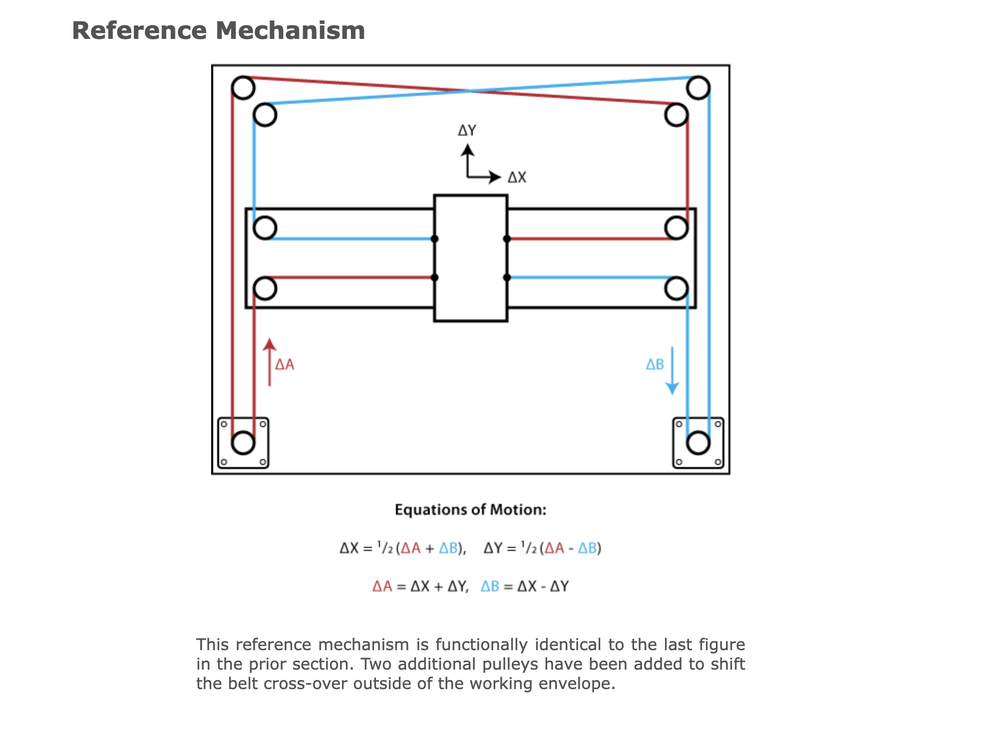
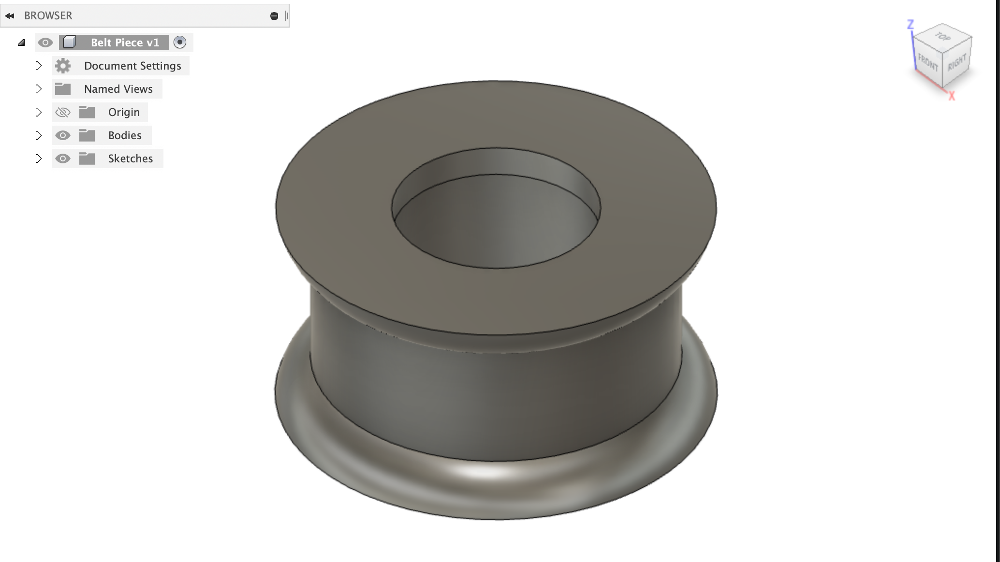
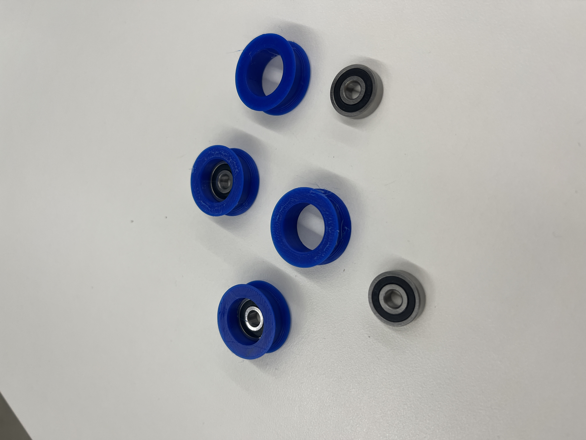
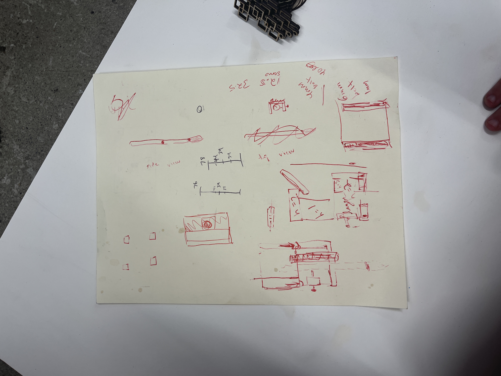

<div class="container-fluid">
<h3 style="text-align: center;"> Week 10: Machine Building and End Effectors </h3>
<p>
Before this week, I’ve had a huge mental block at the thought of having to make a machine for my final project. Everything we’ve done so far has felt very specific and thus approachable but for some reason machine-building feels like a very intimidating leap. Because of this, I’ve somewhat been dreading the machine-building aspect of my final (and because my concept is literally to make a machine I’ve really done myself in) so for this week’s assignment I wanted to just start thinking ahead towards my final project machine. Some of the work of this week will end up bleeding into my final project work and my documentation might be a bit repetitive but I’ll try to talk in more detail about the machine specific process here and then spare the repeated details in my final project documentation.
</p>

<p>My starting point for my machine was that I wanted to make something move on an x and y axis and in a more limited way on the z axis (the brush needs to go up and down but the movement doesn’t have to be precise or straight along the z axis). At first I felt completely stumped for how to do this - not because I didn’t know how but because there almost seemed to be too many options. This was a similar crisis to how I felt the week we first worked with mechanical design way back in week 2 and I felt overwhelmed by the possibilities of gears and pulleys and the countless other ways of creating movement in your machine. So when Rob started telling us about his Urumbot, I was so inspired and my final project finally started to feel realistic. I did a deep dive into CoreXY machines and following Gabby’s advice I looked up corexy and <a href = “https://fabacademy.org/2019/labs/kamakura/students/tsuchiya-yosuke/assignments/week17/” >similar machines</a> to what I hope to make on the “how to make (almost) anything” website. With the <a href=“https://www.instructables.com/CoreXY-CNC-Plotter/”>results</a> of these searches and <a href = “https://gitlab.cba.mit.edu/neilg/urumbu/-/tree/master/UrumbotXY” >Rob’s machine</a>, I now had several good examples to compare and consider as I forged ahead!
</p>
<p>I wasn’t sure what made the most sense to start with, so I decided to begin with the rotational movement. I dug through the lab and found timing belts, pulleys, and bearings that seemed perfect. With Rob’s prototype as a marvelous example, I got to work designing a small cap to fit on top of the bearings. I used a caliper to measure the bearings themselves and the timing belt, and did a first print. This first try was not bad but I didn’t extrude it quite correctly so it wouldn’t actually fit over the bearing. I fixed my mistake and the second try was perfect! </p>

<p>Next I needed to start attaching all my pieces to some kind of frame, so I needed to decide on a scale. I wanted to scale up a bit from where Rob’s prototype was without making it too unmanageable. To the left you can see (one side of) my very unorganized but very helpful notes sheet where I worked out the measurements I would need. I went in search of a large enough piece of wood, but discovered that the only piece that would fit my desired dimensions was OSB. I tried to work with the OSB for a while but it quickly came clear this wood would continue to create problems. For one, I just don't feel as comfortable on the Shop Bot as I do on the laser cutter so I was wasting a lot of valuable time trying to cut the OSB. The final straw was when I realized I wouldn't be able to fit screws far enough in and out of the OSB. I decided to change materials before it was too late. I asked Nathan but there were no large pieces of 1/4" or 1/8" wood so I thought I might need to either scale down significantly or keep fighting with the OSB. Luckily, Nathan found a huge board of a mystery wood that he said I could use. The problem was this wood (other than being in miserable condition - see picture below) was enormous and I wasn't sure how to cut it down. Nathan offered to help me use the saw to cut a smaller piece out of the board. We succeeded but not without harming the poor saw in the process (see picture below). It broke after we were most of the way through so then I used a hand saw to get through the rest. In the end, I had a very sketchy and concerning but perfectly sized piece of wood to work with so I was happy.
</p>
<p><img src="../12/nastywood.JPG" alt="Wood" style="float:left;width:300px;height:auto;">
<img src="../12/brokensaw.JPG" alt="Broken Saw" style="float:right;width:300px;height:auto;"><p>With my new and improved frame material in hand, I set to work laser cutting or drilling the 6 holes for the 2 pulleys on the stepper motors, and the 4 at the top (see CoreXY reference above). I then cut a piece of acrylic that would be moving along the y-axis and drilled holes at the four corners for my bearings. From here, I needed to figure out how to screw in the bearings without impeding any of the motion. Gabby helped me figure out that the bearings I had were for m5 screws (which were in short supply in the lab but luckily I found just enough!). I screwed in all but the stepper motors themselves. This posed a somewhat confusing problem - I couldn’t for the life of me figure out how to measure out where to pre-drill for the 4 screws that go into the top of the motor. I later asked Rob and he said he pulls up the schematics of the motor and measures the distances from the center. But instead I just did a very mediocre job guessing and checking until it was close enough that I could successfully drill both motors into my frame. One of the motors I was using already had the pulley attached, so I attached a second pulley to the other motor, made sure they were both at an even height with the pulleys attached straight to the frame, and it was all set! Now, I just needed to put in the timing belts. I didn’t yet have my end effector, so I just bent and poked holes in a piece of cardboard so I could attach it to the belts.
</p><p>Then I needed to make sure the stepper motors themselves were working. I’ll discuss this in more detail on my final project page but I set up the circuits and eventually got both motors moving! </p>
<center><video width="450" height="auto" controls>
<source src="steppersworking.mp4" type="video/mp4">Your browser does not support the video tag.</video></center>
<p>
In theory, my machine was ready! It had all the mechanical components needed. However, I didn’t want to actually turn on the stepper motors to control the belts until I had a real end effector in place and had much better tension in the belts. So, as a test of my machine, I turned the motors by hand like an “etch a sketch” and it worked! The video below shows a very bad demonstration (I felt bad asking the kind classmate who recorded this for me to wait for me to fix the tension in the belts and record again so this is all I’ve got) but the motion was actually working quite smoothly!
</p>
<center><video width="450" height="auto" controls>
<source src="etchasketch.mp4" type="video/mp4">Your browser does not support the video tag.</video></center>
<p>
So that is all for this week! I made a machine! I am very excited! You can head over to my final project documentation to see where the machine went from here.
</p>